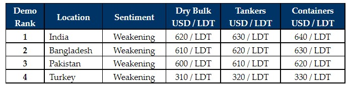

inWeekly Demolition Reports30/05/2022

The ongoing sub-continent collapse in prices fully materialized this week, with all sectors talking down the market and refusing to offer anewon any fresh tonnage whilst they wait for markets to stabilize. As the Ukraine conflict endures, fundamentals continue their collapse at all of the major recycling destinations, as plate prices take turns to precipitously plummet (in India this week) and a combination of the two have likewise afflicted Bangladesh.
A global currency meltdown at the major recycling destinations has also been unfolding, with records being shattered at their new lows against the U.S. Dollar. In fact, depreciating currencies have been one of the primary drivers aggravating this recent collapse. The Lira is once again approaching its recent low of TRY 18 and in Pakistan, the PKR has come off by over 3% against the U.S. Dollar over the last 2 weeks alone.
Unfortunately, this unfolding global economic crisis is increasingly resulting in the usual games at the waterfront, as End Buyers refuse to perform or are finding the most frivolous of reasons to abandon deals with the sole intent to talk down the price. As such, a period of frustration in ensuring deliveries are completed, is likely to ensue.
Any Owners therefore seeking offers on fresh units would be well advised to steer clear of the markets for now, as there is likely to be some opportunistic offering that is not reflective of today’s market pricing and it would be far better to let markets and prices see at least a couple of weeks of stability before parties meet at the bidding tables once again.
The Turkish market has shown some minor improvement in local steel plate prices, but import steel continues to take a beating, resulting in growing confusion amongst Aliaga Buyers, especially while the Lira is taking a beating and is gradually approaching it’s all time record-low against the U.S. Dollar. Bangladeshi Buyers are also waiting for their budget announcement (due in the first week of June) to see if any new taxes may be applicable on the industry.
As such, it is likely to be a far bleaker summer / monsoon season ahead as End Buyers, Cash Buyers and Owners, all grapple with these new realities on prices, some USD 100/LDT below their peak.
For week 21 of 2022, GMS demo rankings / pricing for the week are as below.

📄 Download PDF: 2022-05-29Hun_org.pdfSource: GMS,Inc. ,https://www.gmsinc.net/gms_new/index.php/web